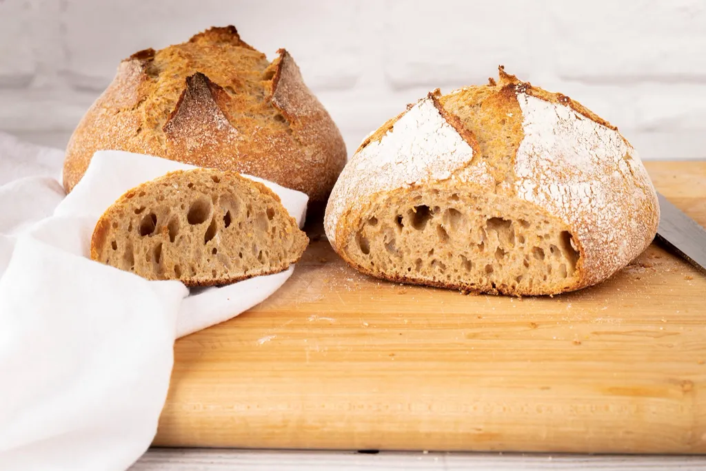
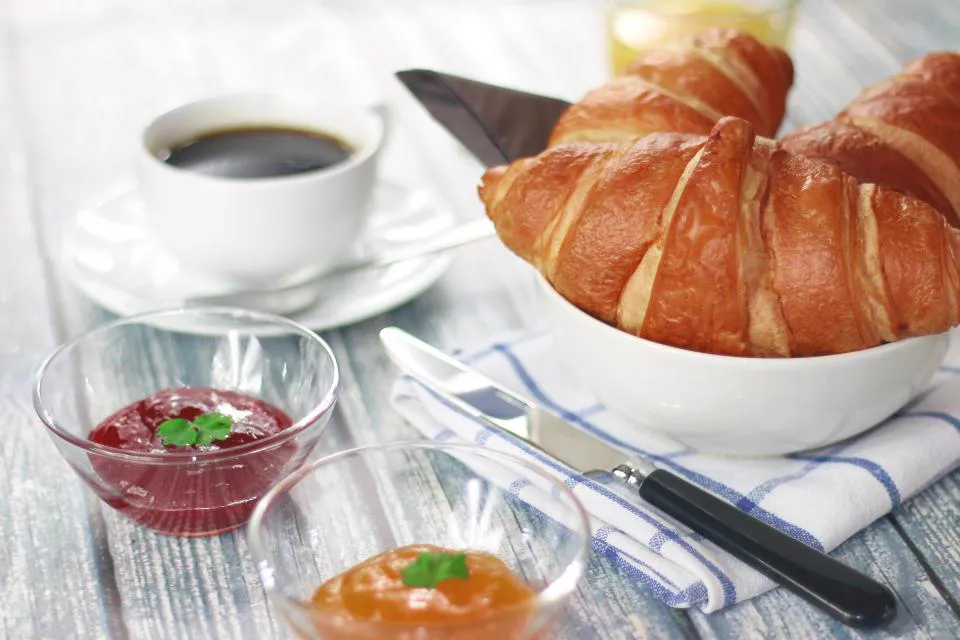
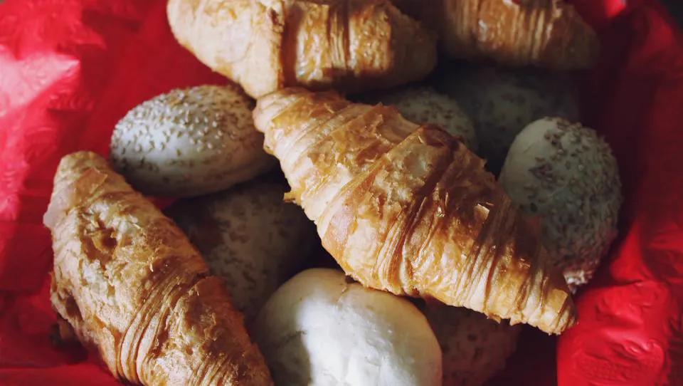
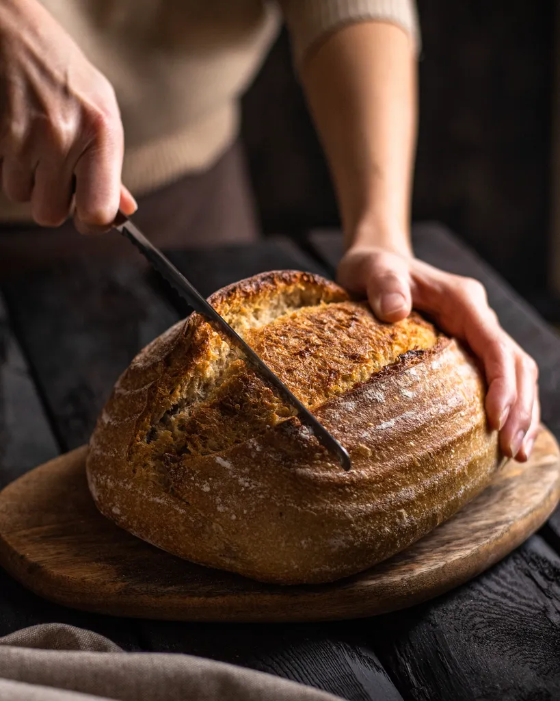
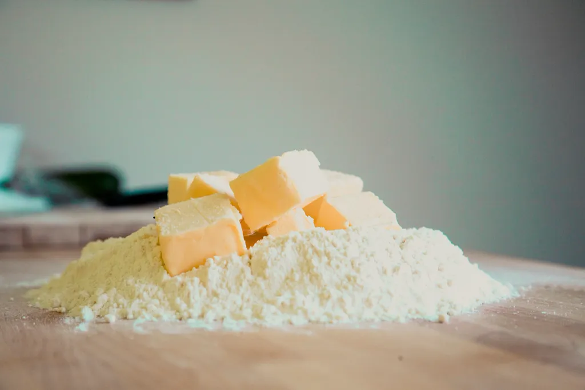

Country sourdough
48 hours from flour to crust. Ask us to slice it.
£5.50Sourdough, croissants and cinnamon buns from a tiny bakery on Chatsworth Road. We start at four, so you do not have to.

Today's oven
Everything is baked on site. When it is gone, it is gone, so check before you come.
The bakes

48 hours from flour to crust. Ask us to slice it.
£5.50
Three days of folding, French butter, no shortcuts.
£2.90
Brown sugar, a lot of cinnamon, a little salt.
£3.20
Dense, dark and good for a week. Our Saturday regulars buy two.
£6.00
Whatever fruit the market had on Friday, in an almond crust.
£4.20
Mix and match. Good for an office, better for a sofa.
£17.00Pre-order
Loaves and boxes sell out by ten on Saturdays. Pre-order online and we keep yours on the shelf with your name on it.
Order for collection
Run a café nearby? We deliver bread and pastries to six cafés in Hackney every morning. Ask about wholesale
Visit